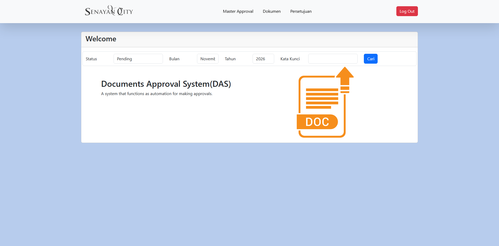
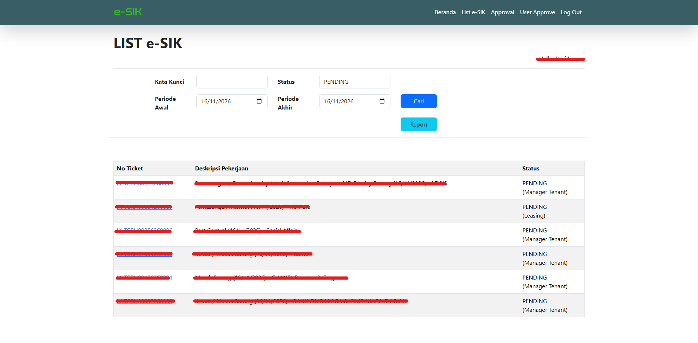

Halo, saya Fauzi Alvan Fadillah. Seorang Software Developer yang berfokus pada pengembangan aplikasi web berbasis ASP.NET (WebForms, MVC, .NET Core), optimasi database SQL Server, integrasi perangkat keras, serta administrasi server IIS.
Teknologi utama yang saya gunakan untuk menyelesaikan masalah operasional bisnis
ASP.NET WebForms, ASP.NET MVC, .NET Core Web API, VB.NET, C#.
Microsoft SQL Server, Stored Procedures, Crystal Reports.
Windows Server, IIS Administration, Application Pool Tuning, SSL Configuration, & Task Scheduler Automation.
HTML5, Bootstrap 5, JavaScript/AJAX, Thermal Printer (ESC/POS), Barcode/QR Scanner, & Payment Gateway API.
Studi kasus aplikasi yang telah dibangun dan diimplementasikan

Masalah: Proses persetujuan dokumen secara manual membutuhkan pencetakan kertas, pencarian tanda tangan fisik secara berjenjang, serta pelacakan status yang sulit sering kali menyebabkan keterlambatan operasional dan risiko dokumen hilang.
Solusi: Membangun aplikasi Document Approval System berbasis web yang mendigitalisasi seluruh alur pengajuan hingga pengesahan dokumen. Sistem ini dilengkapi dengan fitur tanda tangan digital, tracking status persetujuan secara real-time, serta notifikasi otomatis untuk mempercepat pengambilan keputusan tanpa kertas (paperless).

Masalah: Pengajuan surat izin kerja secara manual memakan waktu lama karena harus melalui birokrasi dokumen fisik dan tanda tangan berjenjang, yang sering kali menunda dimulainya pekerjaan di lapangan serta menyulitkan pemantauan izin yang sedang aktif.
Solusi: Membangun aplikasi Digital Work Permit System berbasis web untuk mendigitalisasi proses pengajuan, verifikasi keselamatan/operasional, hingga penerbitan surat izin kerja. Dilengkapi dengan alur persetujuan berjenjang otomatis, notifikasi real-time, dan tanda tangan digital sehingga izin dapat terbit lebih cepat dan terpantau dari mana saja.
Saya terbuka untuk peluang kerja penuh waktu (Full-Time), proyek freelance pengembangan sistem internal perusahaan, maupun konsultasi migrasi/optimasi aplikasi ASP.NET & SQL Server.